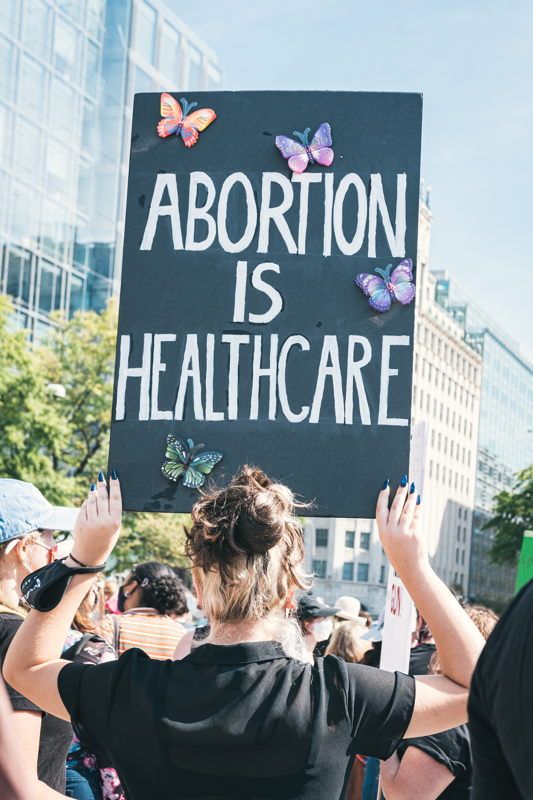

Content Warning: This project discusses with abortion and unsafe abortions and contains language and/or images related to abortion and unsafe abortion.

Why is it important?
When people with unwanted pregnancies cannot access safe abortions, they often resort to unsafe abortions. Unsafe abortions can have servere consequences including death, severe bleeding, infection, and blood poisoning.